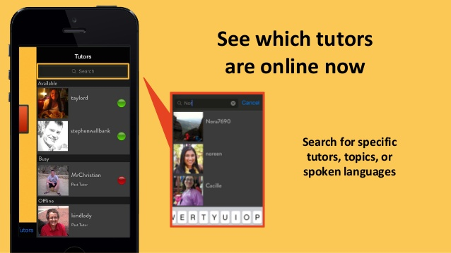
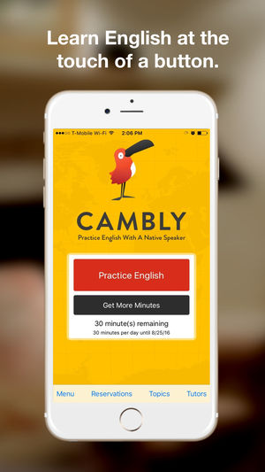

MW
Projects
About
Contact
Cambly
A San Francisco based startup that allows ESL students to practice with native English speakers 24/7
Skills
Python
React/Redux
MongoDB
AWS
Problem and Opportunity
Non-native English speakers from around the world need the opportunity to speak with native English speakers
Cambly addresses this issue by providing an online platform for students from around the world to immediately contact English speakers
My Work
Projects that increased student retention and decreased internal work
Developed a gamification strategy to encourage students to speak to more tutors and reflect on their learning
Automated students’ ability to pause their subscriptions by modifying the MongoDB collection
Converted incoming videos to MP4 using AWS so students can view tutor lesson videos on a variety of devices
Modularized a React component to streamline the login process and increase the likelihood students register
Results and Future Work
Continuous increase in student and tutor usage
Encouraged students to practice more and speak to a variety of tutors
Tutors can upload their own lesson plans in any video format
Reduced internal work by the support team
Results of an experiment that determines the success of streamlining the login process will be released
I will be continuing to work at Cambly starting in October
Cambly Website
 
More Projects